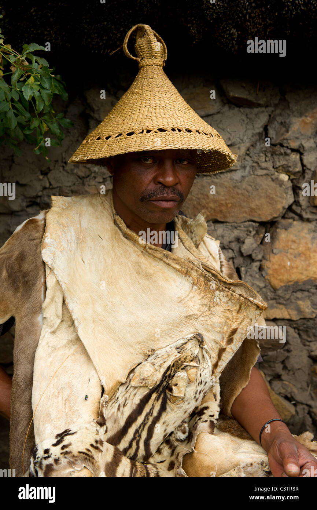

Seanamarena-A premium or royal version of the Basotho heritage blanket.Learn more

Letsatsi-A premium or royal version of the Basotho heritage blanket. Learn more

Moliha-nyeoe- traditional Basotho hat similar in structure to the famous Mokorotlo, but with a slightly different design and cultural meaning.
Lifatla-The iconic Basotho blanket, worn with pride.

Litopo-Basotho Traditional leather boots made from animal hides, typically goat or cow skin.

Ts'eea-Basotho traditional bottom wear designed for men and it is worn mostly by shepherds.
Mokorotlo-Mokorotlo is the traditional Basotho hat made from woven grass (leholi)..

Seshoeshoe-Sesotho dress worn by women for special occations.

Ts'ets'e - traditional Basotho headwear, typically worn by Basotho women during cultural ceremonies or traditional gatherings

Thethana- Basotho traditional attire, typically worn by Basotho women. It is a colorful wrap-around skirt.
Letata-The iconic Basotho blanket, worn with pride.

Basotho-Chabana sa khomo-The iconic Basotho blanket, worn with pride. Learn more

Mose oa khomo-The iconic Basotho blanket, worn with pride.

Jubile ea boipuso-The iconic Basotho blanket, worn with pride. Learn more
Moliha-nyeoe- traditional Basotho hat similar in structure to the famous Mokorotlo, but with a slightly different design and cultural meaning.
Moshoeshoe-The iconic Basotho blanket, worn with pride. Learn more